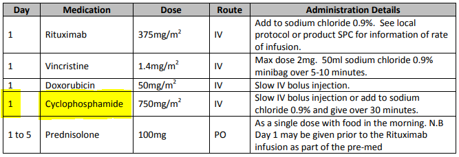

Needs
This section discusses the requirements for a category of computational system that supports the execution of distributed, team-based, and long-running care processes by professional workers and subjects.
How Can IT Improve Clinical Care Process?
Naive approaches to the use of IT to support clinical care process generally assume that the benefits are obvious and automatic, and as a result, often fail to understand in what form computer support may be useful. An error common among IT professionals is to imagine that a clinical workflow system will itself perform the work currently performed by humans, i.e. to replace them. Even with the advent of AI-driven autonomous surgical robots and sophisticated decision support, this view is mistaken, since the process that executes within a workflow engine is not the same thing as the work undertaken by its various performers. Instead, an executable clinical process is better understood as a plan and related decision logic whose execution creates a sophisticated presencial helper within the cognitive space of each connected worker in the real world.
To understand the form a clinical planning system must take to be useful, we firstly need to understand how clinical work is performed in the real world.
The first aspect to consider is that a significant proportion of the activities of healthcare delivery are not clinical per se, but administrative and logistical, such as registering, booking, scheduling, transfers of care and so on. Nevertheless, the timing and conditions that govern appointments and transfers are unavoidably clinically driven, for example: the visits during routine ante-natal care; follow-up appointments post breast cancer treatment; determination of when to discharge a patient to long term nursing or home care. This tells us that there will be some representation of long-term planning in a clinical process support system, not just in administrative systems.
The second aspect to consider is that clinical professionals don’t need to be told how to do medicine. When the moment for performing clinical work arrives, with the exception of pure training situations, professionals already know what to do. What they may need is help with any of the following:
-
following care pathways and guidelines for complex conditions e.g. acute stroke, sepsis, complex childbirth; also guidelines that incorporate changing policy on the use of specific types of test whose costs and risks change over time (e.g. CT scan, MRI, certain drugs);
-
clinical check lists for multi-step procedures, including surgery, to prevent busy or tired personnel forgetting common steps;
-
reminders (that may be signed off) for critical actions in procedures not yet performed, particularly in team-oriented and busy environments (e.g. ED);
-
decision support to determine appropriate treatments, medications from among numerous and/or changing possibilities;
-
verification (signing off) of tasks performed for medico-legal reasons, process improvement, including process mining (see below).
In general, the above capabilities address three human fallibilities:
-
limited capacity to deal with complexity unaided, often denoted as the '7±2' problem, which refers to the limited number of variables that the majority of human beings can keep in mind at one time;
-
the inability to keep up with change (new medications, research etc); and
-
forgetting routine steps due to fatigue, rushing or an unexpected change of personnel in the middle of a procedure.
Automated support for the above would significantly aid the short-term, single clinician/patient situation, but much clinical care today is team-based, and also unfolds over a longer time than a single work shift or day. Therefore another important kind of help is needed:
-
coordination of:
-
team members across departments (via e.g. plan-generated notifications); e.g. acute stroke care;
-
workers undertaking care spanning shifts and personnel changes, e.g. multi-week chemotherapy administration;
-
longer term care, e.g. pregnancy, chronic disease monitoring.
-
A further clinical need which process automation can potentially address is reduction of documentation burden, which with the advent of EMR and other Health IT systems has become a major issue in recent years. In most healthcare delivery environments, clinical documentation is not synchronised with the process of the care delivery, but fitted in when possible, often after the fact. This creates a mental load on physicians, as well as sometimes forcing them to choose between more detailed documentation and spending time with the patient.
Process automation could also address the disconnect between work and documenting by supporting fine-grained, on-the-fly interaction with the EHR, such that as clinical work proceeds, documentation is also being done incrementally. This approach has the effect that all workers involved in the execution of a plan create documentation on the fly, rather than the senior clinician having to do all the documentation. When the work is done, the EHR is up-to-date, or very close to it, allowing all the involved clinicians to move very quickly to the next patient(s).
A further category of requirement for clinical process automation is training. In this case, the steps of a procedure may be second nature to an experienced clinician but for a trainee nurse or surgeon to whom much is new, a clinical guideline system would potentially represent even the most basic steps (e.g. cannulation, central line insertion, surgery preparation) to the trainee. Since being 'experienced' is not a binary state, but a continuum over one’s professional life, some level of training support is likely to be useful for any professional of any level of knowledge, e.g. to learn a newly developed surgical method, or revise a procedure not performed for some time. Training support therefore needs to be a flexible capability to be turned on or off at multiple levels of expertise, by any type of professional role, also based on work context.
A final and not immediately obvious benefit of process automation is the ability to record with reasonably good fidelity the steps and decisions taken by workers in the course of each procedure or episode of care. The resulting event logs provide a rich resource for process mining, a relatively recent discipline described in [1], that uses the history of worker actions to discover how processes actually execute in the real world, with the aim of analysis and improvement of the original executable plan definitions.
The sections below elaborate on some of these topics.
Implementing Best Practices
Best practices in healthcare, especially for complex conditions and treatment pathways with co-morbidities, but also routine activities such as dialysis and angina diagnosis, are increasingly codified in the form of Care Pathways, Clinical Practice Guidelines (CPGs) and related artefacts published by professional colleges, universities, teaching hospitals, and national institutes. These artefacts are based on evidence-based and other kinds of research that have determined which specific approaches to care produce better and more repeatable outcomes for patients. They are usually published as PDF files or HTML websites containing a modicum of structural visualisation of decision pathways; they may contain hundreds of details to do with particular drugs, dosing, analyte levels, and investigational pathways.
One of the primary obstructions to the routine uptake of best practices publications is the inability to integrate them directly into the cognitive care environment of working clinicians. Their use relies on reading prior to care, and either memorisation or else use on a screen or in printed form at the point of care. Due to this basic difficulty, many guidelines are only used in a patchy way depending on individual clinician interest, spare time and psychological factors [2]. Many of the major benefits are consequently not realised until they are incorporated into mainstream medical and nursing training, at which point they become the norm. The time lag for this to occur has been famously stated as being on average 17 years [3], and is thought to range from 10 to 25 years.
It has been recognised for some years that if best practice pathways and guidelines could be made computable in the form of plan and/or decision structures, they could be incorporated directly into clinical applications in use at point of care, greatly reducing the delay from research to use to potentially weeks or months rather than a decade or more via educational or manual dissemination routes.
Guideline and Pathway Authoring in Computable Form
If formalisation of natural language guidelines can succeed, a new possibility of major importance appears: the potential for the primary authoring of pathways and guidelines to be undertaken via tools that create formal expressions directly. This opens up further possibilities such as clinical guideline simulation, testing, and formal verification, which could revolutionise the both the production as well as the translation to point of care of best practices.
The ability to express best practice guidelines in a computable form thus lies at the heart of the requirements for automation of care process. The various kinds of artefacts are described in detail in [_care_process_artefacts].
Simulation and Training
One of the benefits that clinical process automation can bring is the ability to execute plans in a simulation mode. This can be done for a number of reasons:
-
during development of a guideline or pathway, as a means of 'debugging' it;
-
for training purposes for new personnel;
-
for training for experience personnel on rarely used or changed procedures;
-
to test alternative approaches to team structure, improve efficiency etc.
Computer-aided simulation of surgical procedures is not new (e.g. haptic feedback robotic systems with augmented / virtual reality visualisation are used to train surgeons in brain procedures), but is uncommon for longer running and team-based procedures e.g. complex childbirth, sepsis etc. However, medical simulation teaching environments do exist in which process simulation could be established, e.g. Oregon Health Sciences University (OHSU) simulation center.
Long-running Processes
Orthogonal to the semantics of guidelines and pathways are the semantics of how automatable work plans relate to workers in the real world over time. A simple case is that when a plan is executed in an engine, worker(s) are attached by software applications or special devices, and detached at the completion or abandonment of the plan. This will work well enough for short running processes i.e. of minutes or some hours. Longer running processes are another question.
In general human workers are present for a shift or work day of a limited number of hours at a time, with a gap until the next appearance of the same worker. In healthcare, nursing and allied care professionals as well as house residents usually work on a shift basis, in which complete coverage of every 24 hour period is achieved over a series of shifts, while senior physicians and specialists are typically only present during 'normal working hours'. In the time domain of weeks and months, human workers go on holidays, leave job posts and clinics, and themselves die (being only human after all).
A similar kind of pattern, although usually with longer periods, applies to machines that function autonomously as workers (e.g. robotic surgery devices). This is because all machines need to be serviced and in the long term, obsoleted and replaced. Service patterns will be a combination of regular planned down-times and unplanned failures.
The general picture of worker availability within a facility is therefore one of repeating cycles of presence (shifts, work days, in-service periods) during normal at-work periods, punctuated by variable temporary absences for holidays, sickness, and downtime, as well as permanent absence. Worker availability for a given subject at a given moment is a subset of the overall availability within the facility, since any worker may be occupied with some subjects to the exclusion of others, including unplanned attendance (emergencies etc).
In contrast to this, the 'work to be done', whether a well-defined procedure (e.g. GP encounter, surgery) or open-ended care situation (diabetes, post-trauma therapy) will have its own natural temporal extension. This might fit inside a short period of a few minutes or a single shift or work day, i.e. a work session, during which the workers do not change. Anything longer will consist of a series of 'patches' in time during which the work of the plan is actively being performed - i.e. during encounters, therapy sessions, surgery, lab testing, image interpretation and so on.
A priori, healthcare systems, via the administrators, managers, and clinicians in each facility generally make concerted efforts to maintain continuity of care, e.g. by arranging of appointments to ensure that as far as possible, the patient sees the same care team members over time, and by personal efforts to ensure that each logical segment of care is completed in a coherent fashion (for example in antenatal care).
Nevertheless, a plan automation system cannot necessarily assume worker availability, or that it is guaranteed to cover the periods in time during which the patient needs attendance, although ICUs, surgical units etc would usually get close. An automatable plan representation will therefore need to explicitly incorporate the notion of allocation and de-allocation of workers to tasks (including in the middle of a task), as well as hand-overs between workers. This would imply for example, that a task within a plan cannot proceed until an appropriate worker had been allocated to it, which further implies that some basis for allocation may need to be specified. The YAWL language [4] for example supports various allocation strategies such as 'first available', 'most frequently used' and so on.
Cognitive Model
The Co-pilot Paradigm
Common to all of the categories of requirement described above is a general need that any planning / decision support system augment rather than replace the cognitive processing of workers, by providing judicious help when needed. In this view, the system acts like a co-pilot, and does not attempt to be the pilot. It may remind, notify, verify, answer questions and perform documentation, but always assumes that the clinical professionals are both the ultimate performers of the work as well as the ultimate deciders. The latter means that workers may at any time override system-proposed tasks or decisions. Similar to a car navigation system, a clinical co-pilot must absorb deviations from original plans and recompute the pathway at each new situation, as it occurs.
The co-pilot paradigm has direct consequences for formal representation of plans and decision-making, including:
-
the interaction between a worker and the guideline / decision support system might be very fine- or coarse-grained, i.e. the worker may ask the copilot for input frequently or infrequently;
-
a worker may treat computed inferences (i.e. rule results etc) as recommendations that may be overridden (usually with the ability to record justification); this implies a specific kind of interaction with a plan automation system unlike pure automatic computation (as would be used in an industrial process for example);
-
a worker may request the chain of logical justification of a particular rule result; this implies that rule execution must be done so that the execution trace is available for inspection.
Voice-based HCIs
One kind of technology that is becoming routine is voice-based human/computer interaction (HCI). Voice technology has become a useful convenience for using mobile phones while driving or interacting with home audio-visual systems, where it is replacing the remote control. It is likely to become the principle means of HCI in many clinical situations, since it achieves two things difficult to achieve by other means:
-
by replacing physical keyboard interaction with voice, it enables interaction with the system to occur in parallel, and therefore in real-time, with clinical work that typically already occupies the worker’s hands and eyes;
-
it largely removes the problem of maintaining the sterile field around a patient that would otherwise be jeapordised by multiple workers touching keyboards and touchscreens.
Voice control is also likely to be crucial to enabling a clinical process support system to operate as an intelligent co-pilot rather than an overbearing presence in the work environment, since it starts to emulate the normal conversational abilities of human workers, via which any principal worker may ask for help as needed, but also limit system intervention when it is not needed.
Activation of Plans, Guidelines and Decision Support
One of the basic challenges that emerges as soon as computable decision support, guidelines or planning are introduced to the workplace is how the appropriate artefacts from among possible candidates are activated. There are at least three ways this can happen:
-
via static linking of CPGs, plans etc to specific applications and forms, which are launched intentionally by the worker for each kind of work, e.g. specific type of patient visit;
-
via rules that execute when a particular application runs, to try to identify appropriate plans to use;
-
via a rule evaluator running in the background that executes on various events, e.g. data being committed to the EHR (e.g. test results), device data values, or simply on a timed basis.
The first of these is likely to be used with more comprehensive pathways and guidelines, such as ante-natal care, that have their a dedicated application or form within another application. The second approach normally limits guidelines activated to candidates matched to the type of patient or condition of the application in question, and might offer choices to the user. The third approach is normally used to run decision support guidelines designed to generate alerts for patients with specific risks, and might range from medication recommendations for patients showing evidence of hypertension to alerts for notifiable infections, such as methicillin-resistant staphylococcus aureus (MRSA) and Covid-19.
Mechanisms based on Event-Condition-Action (ECA) rules such as CDS-hooks are used to enable events in the clinical work environment to create requests to external CDS services and return recommendations. A well-known problem with injudicious launching of guidelines or rules is 'alert fatigue' due to numerous and/or incoherent alerts only weakly related to the patient. Uncontrolled alerting can adversely affect patient safety, since clinicians can easily miss the few important alerts that may occur.
Various requirements on computable representation of plans and guidelines follow from the above considerations:
-
care pathways, therapeutic guidelines and order sets need to include clinical indications, defined in terms of health conditions (e.g. having viral pneumonia), current medications or other evaluable criteria, which allow matching to subject state;
-
CDS (diagnostic) guidelines might include broad patient matching criteria (e.g. age, sex, being diabetic) rather than precise indications, and activation often relies only on the required input variables being available.
Integration with the Patient Health Record
General-purpose workflow formalisms and products do not generally assume the presence of a system whose purpose is to record information (e.g. observations, decisions, orders, actions) undertaken for the subject, beyond some direct record of the plan execution itself. However many tasks in healthcare plans involve the review and/or capture of complex data sets specific to the task at hand, which would naturally be recorded in the patient record. In order to make clinical plans efficient for their users, the formal representation of tasks needs to account for precise, unambiguous data sets and detailed action descriptions. For example a task whose short description is 'administer Cyclophosphamide, day 1' will have a detailed description as shown in the highlighted row of the following table:

In an application, the dose will have been pre-computed based on patient body surface area. The administration description will usually be recorded in a structured way, e.g. {medication=cyclophosphamide; dose=1mg; route=IV; timing=30 mins; method=with 0.9% NaCl, …}.
From a user perspective, if this information structure (in an appropriate unfilled template form) can be directly associated with the task within a plan in such a way as to enable easy filling in of the data and subsequent recording in the patient record, no further work is required to update the record at plan (or task) completion. Similar situations require display of specific data sets as part of performing a task. However, if patient record interactions cannot be tightly associated with tasks in a plan, plan automation may not significantly reduce clinician documentation burden, and may have limited value. Worse, if there is no ability to associate information retrieval and recording actions with their real world tasks, plan authors will be forced to create tasks within plans dedicated to these information system interactions. This will have the effect of greatly increasing the size of many plans while reducing their comprehensibility.
In an ideal realisation of healthcare process automation, the data sets would be standardised, and most likely part of the plan definition. However, for many practical reasons, data sets vary across environments, and a realistic approach to integrating data sets with plans needs to allow for both explicit declaration and anonymous referencing. The former may be used in environments that support detailed clinical data-set definitions (e.g. openEHR archetypes and templates, published HL7 FHIR profiles, Intermountain CEMs etc), whereas deployment in environments with mixed back-ends and legacy EMR systems will more likely require plan tasks to simply reference native EMR or other application UI forms.
Independence of Reusable Guidelines from Legacy HIS Environments
One of the hardest problems to solve historically with respect to computable guidelines and pathways has been how to author them so as to reference needed external data about the subject, but to do so independent of any particular back-end system environment. The general situation is that the data items, which we term subject variables, needed by a plan or guideline are populated from numerous kinds of back-end systems and products, including EMR systems, disease registers, departmental systems, research systems and increasingly, real-time devices. Each of these have their own data models, terminologies and access methods. Although there are standards for accessing such systems including standards from HL7 (HL7v2, CDA, FHIR), IHE (XDS), OMG, and IEEE these are themselves used in different forms and 'profiles', and are not used on all systems, particularly smaller research or practitioner-specific systems. Additionally, which data interoperability standards are in use in particular places changes over time.
In order to ensure computable plans and guidelines are independent of the heterogeneity of both back-end systems and ever-changing data standards, an approach is needed such that subject variables are declared symbolically within the computable representation, and are mapped to local system environments in a separate location, such as a dedicated service.
References
-
[1] W. M. P. van der Aalst, Process Mining: Data Science in Action. Springer-Verlag, 2016.
-
[2] H. Hoesing and J. C. International, “Clinical Practice Guidelines: Closing the Gap Between Theory and Practice.” [Online]. Available: https://www.elsevier.com/__data/assets/pdf_file/0007/190177/JCI-Whitepaper_cpgs-closing-the-gap.pdf
-
[3] Z. S. Morris, S. Wooding, and J. Grant, “The answer is 17 years, what is the question: understanding time lags in translational research,” Journal of the Royal Society of Medicine, vol. 104, no. 12, pp. 510–520, 2011, doi: 10.1258/jrsm.2011.110180.
-
[4] A. H. M. T. Hofstede, W. M. P. van der Aalst, M. Adams, and N. Russell, Modern Business Process Automation: YAWL and its Support Environment. Springer-Verlag, 2010. doi: 10.1007/978-3-642-03121-2.